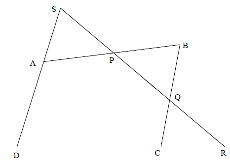

SL Paper 1
The vertices A, B, C of an acute angled triangle have position vectors a, b, c with respect to an origin O.
The mid-point of [BC] is denoted by D. The point E lies on [AD] such that \({\text{AE}} = 2{\text{DE}}\).
The perpendiculars from B to [AC] and C to [AB] meet at the point F.
Show that the position vector of E is
\(\frac{1}{3}\) (a + b + c).
Explain briefly why this result shows that the three medians of a triangle are concurrent.
Show that the position vector f of F satisfies the equations
(b – f ) \( \bullet \) (c – a) = 0
(c – f ) \( \bullet \) (a – b) = 0.
Show, by expanding these equations, that
(a – f ) \( \bullet \) (c – b) = 0.
Explain briefly why this result shows that the three altitudes of a triangle are concurrent.
The point \({\rm{T}}(a{t^2},2at)\) lies on the parabola \({y^2} = 4ax\) . Show that the tangent to the parabola at T has equation \(y = \frac{x}{t} + at\) .
The distinct points \({\rm{P}}(a{p^2}, 2ap)\) and \(Q(a{q^2}, 2aq)\) , where \(p\), \(q \ne 0\) , also lie on the parabola \({y^2} = 4ax\) . Given that the line (PQ) passes through the focus, show that
(i) \(pq = - 1\) ;
(ii) the tangents to the parabola at P and Q, intersect on the directrix.
The normal at the point \({\text{T}}(a{t^2},{\text{ }}2at),{\text{ }}t \ne 0\), on the parabola \({y^2} = 4ax\) meets the parabola again at the point \({\text{S}}(a{s^2},{\text{ }}2as)\).
Show that \({t^2} + st + 2 = 0\).
Given that \({\rm{S\hat OT}}\) is a right-angle, where O is the origin, determine the possible values of \(t\).
The triangle ABC is isosceles and AB = BC = 5. D is the midpoint of AC and BD = 4.
Find the lengths of the tangents from A, B and D to the circle inscribed in the triangle ABD.
Given that the tangents at the points P and Q on the parabola \({y^2} = 4ax\) are perpendicular, find the locus of the midpoint of PQ.
\({\text{ABCDEF}}\) is a hexagon. A circle lies inside the hexagon and touches each of the six sides.
Show that \({\text{AB}} + {\text{CD}} + {\text{EF}} = {\text{BC}} + {\text{DE}} + {\text{FA}}\).
Consider the curve C given by \(y = {x^3}\).
The tangent at a point P on \(C\) meets the curve again at Q. The tangent at Q meets the curve again at R. Denote the \(x\)-coordinates of \({\text{P, Q}}\) and R, by \({x_1},{\text{ }}{x_2}\) and \({x_3}\) respectively where \({x_1} \ne 0\). Show that, \({x_1},{\text{ }}{x_2},{\text{ }}{x_3}\) form the first three elements of a divergent geometric sequence.
The points P, Q and R, lie on the sides [AB], [AC] and [BC], respectively, of the triangle ABC. The lines (AR), (BQ) and (CP) are concurrent.
Use Ceva’s theorem to prove that [PQ] is parallel to [BC] if and only if R is the midpoint of [BC].
The points A, B have coordinates \(( - 3,{\text{ }}0)\), \((5,{\text{ }}0)\) respectively. Consider the Apollonius circle \(C\) which is the locus of point P where
\[\frac{{{\text{AP}}}}{{{\text{BP}}}} = k{\text{ for }}k \ne 1.\]
Given that the centre of \(C\) has coordinates \((13,{\text{ }}0)\), find
(i) the value of \(k\);
(ii) the radius of \(C\);
(iii) the \(x\)-intercepts of \(C\).
Let M be any point on \(C\) and N be the \(x\)-intercept of \(C\) between A and B.
Prove that \({\rm{A\hat MN}} = {\rm{N\hat MB}}\).
The point \({\rm{P}}(x,y)\) moves in such a way that its distance from the point (\(1\) , \(0\)) is three times its distance from the point (\( -1\) , \(0\)) .
Find the equation of the locus of P.
Show that this equation represents a circle and state its radius and the coordinates of its centre.
The parabola \(P\) has equation \({y^2} = 4ax\). The distinct points \({\text{U}}\left( {a{u^2},{\text{ }}2au} \right)\) and \({\text{V}}\left( {a{v^2},{\text{ }}2av} \right)\) lie on \(P\), where \(u,{\text{ }}v \ne 0\). Given that \({\rm{U\hat OV}}\) is a right angle, where \({\text{O}}\) denotes the origin,
(a) show that \(v = - \frac{4}{\mu }\);
(b) find expressions for the coordinates of \({\text{W}}\), the midpoint of \([{\text{UV}}]\), in terms of \(a\) and \(u\);
(c) show that the locus of \({\text{W}}\), as \(u\) varies, is the parabola \({P'}\) with equation \({y^2} = 2ax - 8{a^2}\);
(d) determine the coordinates of the vertex of \({P'}\).
Prove the internal angle bisector theorem, namely that the internal bisector of an angle of a triangle divides the side opposite the angle into segments proportional to the sides adjacent to the angle.
The bisector of the exterior angle \(\widehat A\) of the triangle ABC meets (BC) at P. The bisector of the interior angle \(\widehat B\) meets [AC] at Q. Given that (PQ) meets [AB] at R, use Menelaus’ theorem to prove that (CR) bisects the angle \({\rm{A}}\widehat {\rm{C}}{\rm{B}}\) .
Triangle ABC has points D, E and F on sides [BC], [CA] and [AB] respectively; [AD], [BE] and [CF] intersect at the point P. If 3BD = 2DC and CE = 4EA , calculate the ratios
AF : FB .
AP : PD

The figure shows a circle C1 with centre O and diameter [PQ] and a circle C2 which intersects (PQ) at the points R and S. T is one point of intersection of the two circles and (OT) is a tangent to C2 .
Show that \(\frac{{{\rm{OR}}}}{{{\rm{OT}}}} = \frac{{{\rm{OT}}}}{{{\rm{OS}}}}\) .
(i) Show that \({\rm{PR}} - {\rm{RQ}} = 2{\rm{OR}}\) .
(ii) Show that \(\frac{{{\rm{PR}} - {\rm{RQ}}}}{{{\rm{PR}} + {\rm{RQ}}}} = \frac{{{\rm{PS}} - {\rm{SQ}}}}{{{\rm{PS}} + {\rm{SQ}}}}\) .
A triangle \(T\) has sides of length \(3\), \(4\) and \(5\).
(i) Find the radius of the circumscribed circle of \(T\) .
(ii) Find the radius of the inscribed circle of \(T\) .
A triangle \(U\) has sides of length \(4\), \(5\) and \(7\).
(i) Show that the orthocentre, H, of \(U\) lies outside the triangle.
(ii) Show that the foot of the perpendicular from H to the longest side divides it in the ratio \(29:20\).
A wheel of radius \(r\) rolls, without slipping, along a straight path with the plane of the wheel remaining vertical. A point \({\text{A}}\) on the circumference of the wheel is initially at \({\text{O}}\). When the wheel is rolled, the radius rotates through an angle of \(\theta \) and the point of contact is now at \({\text{B}}\), where the length of the arc \({\text{AB}}\) is equal to the distance \({\text{OB}}\). This is shown in the following diagram.

Find the coordinates of \({\text{A}}\) in terms of \(r\) and \(\theta \).
As the wheel rolls, the point A traces out a curve. Show that the gradient of this curve is \(\cot \left( {\frac{1}{2}\theta } \right)\).
Find the equation of the tangent to the curve when \(\theta = \frac{\pi }{3}\).
(a) The function \(g\) is defined by \(g(x,{\text{ }}y) = {x^2} + {y^2} + dx + ey + f\) and the circle \({C_1}\) has equation \(g(x, y) = 0\).
(i) Show that the centre of \({C_1}\) has coordinates \(\left( { - \frac{d}{2}, - \frac{e}{2}} \right)\) and the radius of \({C_1}\) is \(\sqrt {\frac{{{d^2}}}{4} + \frac{{{e^2}}}{4} - f} \).
(ii) The point \({\text{P}}(a, b)\) lies outside \({C_1}\). Show that the length of the tangents from \({\text{P}}\) to \({C_1}\) is equal to \(\sqrt {g(a,{\text{ }}b)} \).
(b) The circle \({C_2}\) has equation \({x^2} + {y^2} - 6x - 2y + 6 = 0\).
The line \(y = mx\) meets \({C_2}\) at the points \({\text{R}}\) and \({\text{S}}\).
(i) Determine the quadratic equation whose roots are the x-coordinates of \({\text{R}}\) and \({\text{S}}\).
(ii) Hence, given that \(L\) denotes the length of the tangents from the origin \({\text{O}}\) to \({C_2}\), show that \({\text{OR}} \times {\text{OS}} = {L^2}\).
The diagram below shows a quadrilateral ABCD and a straight line which intersects (AB), (BC), (CD), (DA) at the points P, Q, R, S respectively.

Using Menelaus’ theorem, show that \(\frac{{{\rm{AP}}}}{{{\rm{PB}}}} \times \frac{{{\rm{BQ}}}}{{{\rm{QC}}}} \times \frac{{{\rm{CR}}}}{{{\rm{RD}}}} \times \frac{{{\rm{DS}}}}{{{\rm{SA}}}} = 1\) .
A circle \({x^2} + {y^2} + dx + ey + c = 0\) and a straight line \(lx + my + n = 0\) intersect. Find the general equation of a circle which passes through the points of intersection, justifying your answer.
Two line segments [\(\rm{AB}\)] and [\(\rm{CD}\)] meet internally at the point \(\rm{Y}\). Given that
\({\text{YA}} \times {\text{YB}} = {\text{YC}} \times {\text{YD }}\) show that \(\rm{A}\), \(\rm{B}\), \(\rm{C}\) and \(\rm{D}\) all lie on the circumference of a circle.
Explain why the result also holds if the line segments meet externally at \(\rm{Y}\).
The rectangle ABCD is inscribed in a circle. Sides [AD] and [AB] have lengths \(3\) cm and (\9\) cm respectively. E is a point on side [AB] such that AE is \(3\) cm. Side [DE] is produced to meet the circumcircle of ABCD at point P. Use Ptolemy’s theorem to calculate the length of chord [AP].